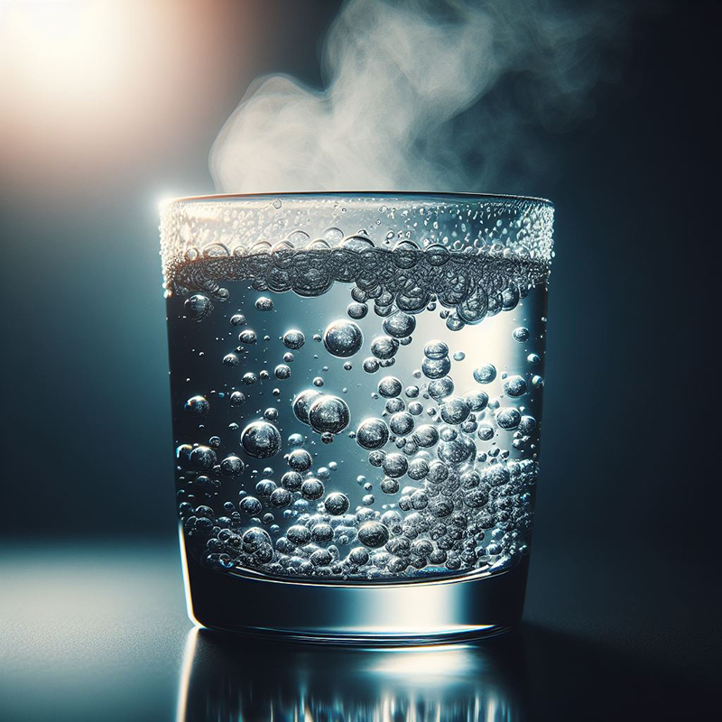

Boiled Water
Tasty boiled water!
Savor the simplicity of a classic boiled water elixir. This timeless beverage requires no additional ingredients, allowing you to appreciate the purity and clarity of perfectly boiled water.
Ingredients
- Water
Recipe instructions
- Boil the Water: Start by bringing water to a rolling boil in a kettle or pot. Use the desired amount based on your preference for a warm drink.
- Watch the Bubbles: As the water heats up, observe the formation of bubbles at the bottom and sides of the pot. Wait for a vigorous rolling boil.
- Turn Off the Heat: Once the water reaches a rolling boil, promptly turn off the heat source. Avoid overboiling, as it may alter the taste and texture of the water.
- Cool Slightly (Optional): Allow the boiled water to cool for a minute or two, ensuring it's at a comfortable drinking temperature.
- Serve: Pour the boiled water into your favorite mug or cup.
This boiled water elixir is a straightforward and comforting beverage, perfect for those moments when you desire a simple and soothing drink.
Return to main page